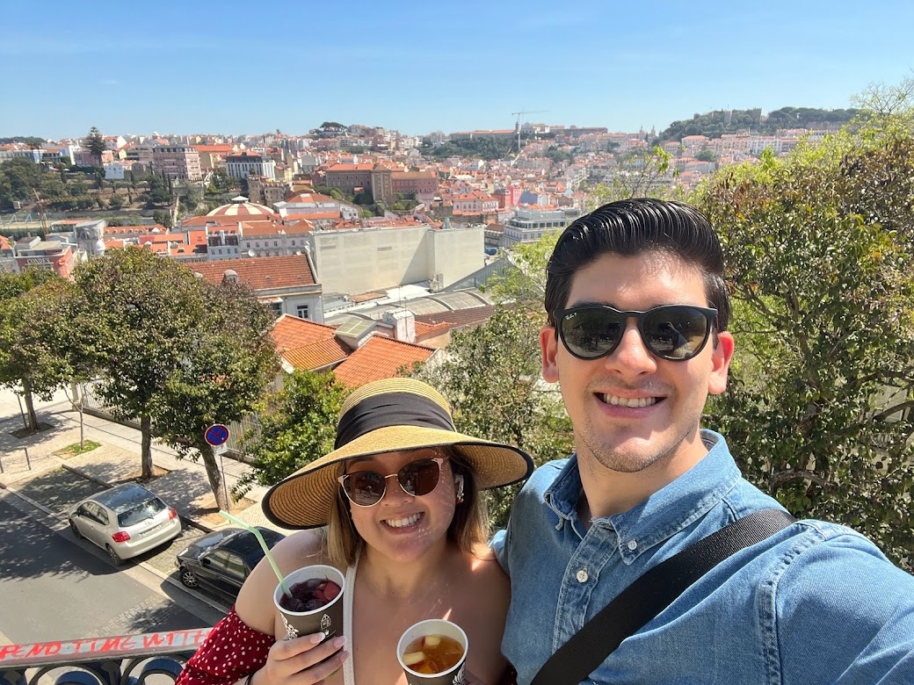

Here are a list of some things that we did in Portugal.
- Explore Downtown Lisboa
- Hiking the shores of Cascais
- Explore the Palaces of Sintra
In the year of 2022, my husband and I tied the knot on April 9. The very next day, we were on a plane to Portugal. My husband did all of the honeymoon planning since I did the wedding planning so I had very little knowledge of what I was getting myself into. But boy! We were only there for a week and it was one of the best experiences of my life. In this blog, I will outline some of my favorite activities that we did and the food that I would definitely recommend if you ever find yourself there.
Here are a list of some things that we did in Portugal.
We were on a budget so we did some grocery shopping for some of our meals, but below are some of the snack/pastry places that we did try and thoroughly enjoyed!